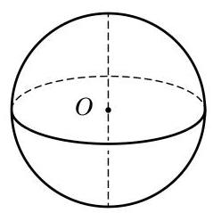
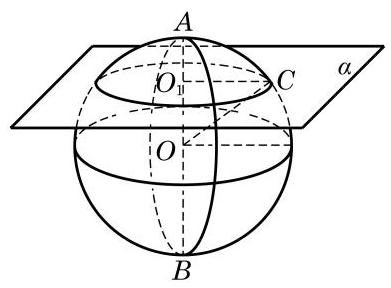
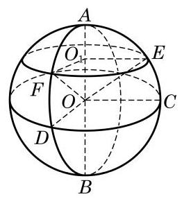
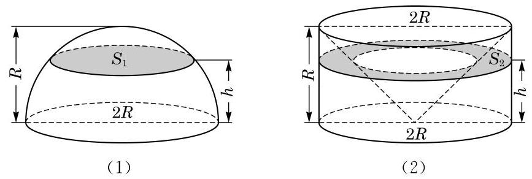
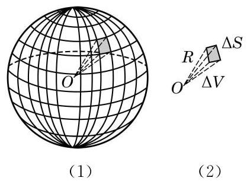
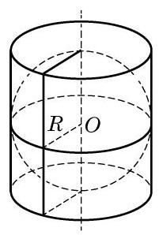
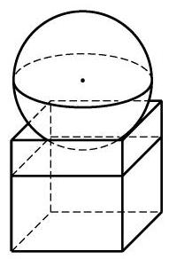
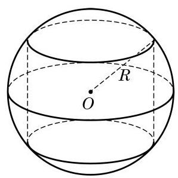

例题 1
例 1 如图 11-4-3,已知球的半径为 . 求小圆 的半径.
学生阅读版 / 沪教版高中数学
必修第三册
第11章简单几何体 · 保留教材主线与原题
教材与正式教参整合
球是日常生活中最常见的几何体之一, 如足球、篮球、乒乓球等，其形状都是球体，如图 11-4-1 所示.
图 11-4-1

图 11-4-2

图 11-4-3
例 1 如图 11-4-3,已知球的半径为 . 求小圆 的半径.
例 2 如图 11-4-4,设 是球 的一条直径,过球心 作一个大圆 与 垂直,过直径 上不同于点 的任一点 作与 垂直的平面,与球 交于小圆 ,过直径 作两个平面与球分别交于两个大圆 和 和 分别是这两个大圆的圆周与圆 的交点. 求证:

图 11-4-4
(1) 都是二面角 的平面角；
(2) 和 与平面 所成的角相等.
当以一点为圆心的圆不只一个时, 可以用表示圆心的字母后面跟着表示圆周上不在一条直径上的两个点的字母来表示所指的圆, 如本题的圆 . 这样的三点完全决定了圆所在的平面以及在平面上圆心位置和圆的大小.
(1)经线对应的两平面所成的二面角的大小；
(2)纬线所在两平面的距离.
设有一个半径为 的球. 和柱体、锥体一样,我们也可以应用祖暅原理推导球的体积公式. 我们先只考虑半球, 即由球的一个大圆把球切成两部分中的一部分(图 11-4-6(1)). 作为对比的几何体,我们取底面半径为 、高为 的圆柱,并从中切去一个倒置的底面半径为 、高为 的圆锥 (圆锥的底面置于圆柱的上底面，圆锥的顶点置于圆柱下底面的圆心) (图 11-4-6(2)).

图 11-4-6
用平行于底面高度为 的平面截这两个几何体. 半球在大圆截口上方高度 处的截面是半径为 的圆,所以它的面积是 ; 容易看出右边几何体中被切掉的圆锥在高度 上的截面的半径是 ,所以右边几何体在高度 上的截面面积是 . 这两个截面面积相等,根据祖暅原理, 这两个几何体的体积相等, 即半球的体积为图 11-4-6(2) 中圆柱体积减去圆锥体积 .
由此可见, 球的体积是
例 3 有一种空心钢球,质量为 ,测得球的外直径等于 . 求它的内直径. (钢的密度是 ,结果精确到 )
球的表面积就是球面的面积. 由球的定义可以看出, 球面是由一条半圆弧绕其直径旋转一周而成的曲面, 它不能像圆柱面、 圆锥面那样展开为平面图, 求它的面积就不能化为平面的问题.
实际上, 球面面积公式的严格推导或证明需要用到极限与微积分等工具, 本教材中无法完整给出. 作为替代, 本小节给出球面面积公式, 并描述一种证明的思路, 等同学们学了更多数学知识后, 就有可能对这种思路有更深的理解, 甚至可以自己把它补成严格的数学证明.
以 为半径的球面面积是

图 11-4-7
如图 11-4-7(1)所示，把球面剖分成许多小区域. 取其中一个区域, 把它近似地看成平面的三角形或多边形, 从而它与球心组成了一个侧棱是 的棱锥,当这个区域足够小时,棱锥的高也近似于 ,棱锥的体积 ,其中 为棱锥底面积 (图 11-4-7(2)). 当取遍剖分中的所有小区域时, 的总和近似于球面的面积 ,而 的总和近似于球的体积 ,于是我们得到球面面积与球的体积之间的关系
这个关系式与剖分过程无关. 可以想象, 当剖分做得越来越精细时, 推导过程中的“近似”越来越趋向于“精确”, 于是上述近似关系最终成为相等关系, 再把球的体积公式代入, 得到
整理即得球面面积公式.

图 11-4-8
例 4 如图 11-4-8, 已知圆柱的底面直径与高都等于球的直径. 求证:
(1)球的表面积等于圆柱的侧面积；
(2)球的表面积等于圆柱表面积的 .

(第 3 题)
(第 3 题)

(第 4 题)